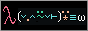
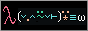

About Me
Hiya I'm Reisensei, a CS student. I am a generalist who has has made all sorts of projects, such as a discord bot with a database and a programming language. I have high levels of proficiency in python object oriented programming, I do consider myself knowledgeable in low level systems, web development, performance improvements, algorithms and data structures but don't consider myself overly skilled yet. I am currently a full time student studying A-Level Mathematics, Further Mathematics, Computer Science and German.
Programming Projects
Currently, I only have two main projects I am happy with:
- Programming Language
- Discord Bot
- Physics engine
- JAR file decompiler (a bit like Ghidrah)
- Animation program
- Text compression
- Leetcode Clone
- Pickle File Inspector
- Search Engine
Repos List
Non Programming Interests
Maths
I also enjoy maths and look forward to studying it at high school level (more exactly A Level). The course I am
taking are:
- Core Pure 1
- Core Pure 2
- Statistics and Mechanics 1
- Statistics and Mechanics 2
- Further Mechanics 1 (Optional Module)
- Decisions 1 (Optional Module)
- Proofs (Induction, Exhaustion, Deduction)
- Complex Numbers
- Matrices
- Calculus
- Vectors
- Polar Coordinates
- Hyperbolic Functions
- Differential Equations
- Coordinate Geometry
- Sequences and Series (summations)
- Trigonometry (including identities)
- Algorithms
- Graph Theory
- Critical path analysis
- Linear Programming
Music
I play two instruments: Bag Pipes (SQA 4) and Bass Guitar (No grade). I have played in a: pipes and drums band, and a
competition band. During my time in the pipes and drums band, I have had the opportunity to visit and play at many cool
places. Some are listed below:
- Menin Gate (An annual event where we play in Belgium)
- American Battle Monuments Commission Centenary
- Rosslyn Park National Schools 7s
- Caledonian Club Summer Ball
- CCF Biennial Inspection
- National League Playoff Finals (13 May 2023, played at 1420 to entertain the crowd)
- Armed Forces Day (24th June 2023)
- Festival of Education (Wellington collage, 2023)
- Surrey Police Pass Off Parade (2023)
- Brookwood Last Post (2023 and 2024)
- Lord Mayor's Show (London, 2023)
- Aldershot Military Museum 40th Birthday (2024)
- D-Day celebrations (Hungerford, 2024)
- Menin Gate (2024, second time)
- Aldershot Town FC Remembrance Match
- Menin Gate (2025, third time)
- New York City (2025)
- London Band Week (2025)
Buttons!
Below is my 88x31 button!
(Feel free to use!)
Here are some of the buttons that represent me:
Here are the buttons of my idols:



(Feel free to use!)
Here are some of the buttons that represent me:
Here are the buttons of my idols:

Blog
3/11/2024
Hello world! I'm still working on the website, shouldn't take much longer. I've got some homework to do so I won't have too much time left over.Update: Finally got the website to a good spot, and got all the homework done too.
11/11/2024
I really want to give APL a go, I have heard a ton of good stuff about it. I would give haskell a go but it feels less kind somehow. APL is functional and feels closer to maths than programming. I get the feeling that starting more or less from scratch will get me thinking in an APL way, instead of trying to find the best python equivalent in another language.12/11/2024
More trying to learn APL. Doing my best but it's hurting my head (got up to the array indexing part). I've also got a test back and got a decent score, below 95%, I need to do more work ( ͡° ⁄ ͜⁄ ⁄ ⁄ ͡°)!16/11/2024
I really need to come up with another programming project. Maybe it's time to make the text compressor. Update: I ended up trying to make a text-diff tool, it didn't go the best. I also tried to make the functional language but couldn't get past the lexer. I think I am a bit jaded with programming and should do some questions to get me back to normal.19/11/2024
I think I need to make more better projects (I think that all the time, lol). I just need to get started on a project and get over the 20% mark, that's usually when I start to really work on it. I should also just make a list of projects I want to make (along with the goals I have in mind), and just make some.As someone who also needs to do a programming project (which contributes to my overall A-Level grade), I should really get back into the habit of working on these projects.